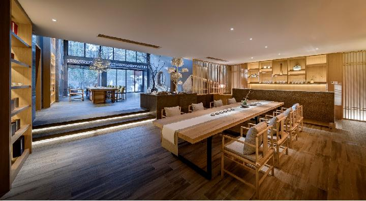

武夷山六尚·水岸山色美宿
六尚·水岸山色美宿坐落于武夷山旅游度假区梅溪河畔的武夷水庄，依托梅溪河自然水流，庄园内山水环绕，与四周山景相互映衬，宛若独具特色的东方威尼斯水城。
水岸山色有舒适山景套房，独立庭院房、露天泡池榻榻米房、园景复式套房等多种房型。景观设计及室内陈设结合了山、林、竹、石、水等元素，在体现自然与禅元素的同时，又与自然融为一体。
这里听得见风穿过竹林清脆醒耳的声音，闻得见露水拍打岩石透出青苔的清凉；观山、听水、饮茶、不知老之将至……
如果你正好不迷恋传统酒店过于冷静的风格与拘谨的服务，那么水岸山色美宿将是你的极佳选择。贴心管家式服务，会让你的旅途增添些许烟火之气。专业的酒店管理理念，琢磨您入住后的每一个细节，只为让你的旅途没有束缚，舒适而自由。旅途奔波，我们为您准备了武夷特色茶浴，让您留点时间犒劳自己。
美宿提供室外停车场，公区配设水吧，可喝茶、品酒，露天花园、户外茶寮，可举行各类活动。
美宿必不可少的自然是美食。在这里不仅能品尝到当地的特色养生早餐，最重要的是我们的本地私厨做的一手美味可口的当地菜，食材新鲜讲究，土鸡、笋干、溪鱼等食材直接取自于山里，每一道来自水岸山色的美食都经过细心加工后才呈上餐桌，带着山水间独特的味道。Open Kitchen的设计让你吃的更放心。
武夷山下问茶，自有饮不尽的茶和说不完的话。闲暇十分，让美宿的小伙伴为您沏上一壶茶，与天南海北的朋友一同分享旅途的欢乐，这才是旅行该有的样子。
一竹、一石、一盏、一茶，
窗外竹影摇曳于书案上，溪水潺潺响入旅者的梦乡。
这样的日子，这样的地方，
我们期待与你相见在四季。

地理位置：武夷山三姑度假区角亭水庄二期2号